The Case
Three Helmans on one transport
Helen said two cousins found her in Budapest in June 1945 and told her what had happened to her family. She never gave their names. The records give them, and place both men on the same transport as her father. What follows is the search in the order it was worked.
One card, and nothing else
The family held a single Buchenwald prisoner card for Zacharias Helman, Helen’s father, and assumed that was the end of what could be known. The research began in 2026.
Arolsen Archives · Buchenwald Häftlings-Personal-Karte 57101
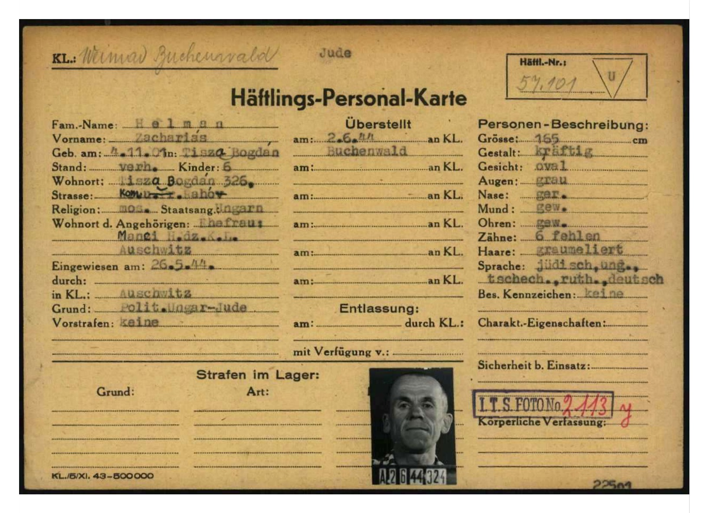
Two Helmans, two lines apart
The card carried a prisoner number, and prisoner numbers sit inside sequences. Pulling the intake roster for that transport put Zacharias on page 8, at 57101. Two lines below him, at 57103, was a second Helman. Nobody in the family had ever heard of Michal.
Both are coded Z4, the block designation, in the same hand on the same page. Between them at 57102 sits Grünfeld, Herman, a stranger.
Arolsen Archives · nominal roll of the 1,000 Hungarian-Jewish arrivals of 2 June 1944, page 8, scan 0002077

Then a third, on an earlier page
Reading backwards through the same roll produced Helman, Lajos at 56906, two pages earlier. A lower number means an earlier arrival, and his own card confirms it. He was arrested on 10 April 1944, five weeks before the other two.
Three men of one surname on one transport, from a village of sixty-eight Jewish households.
Arolsen Archives · same roll, page 6, scan 0002075; prisoner card 56906

Who they were to each other
The registration forms name the parents. Lajos and Michal are both sons of Miksa Helman, and the 1921 Czechoslovak census places Miksa in the household of Iczik Helman, Zacharias’s father. Two brothers and their uncle. All three born in Tiszabogdány, all three arrested there, all three recorded as Fuhrmann, carters, the same trade.
At intake on 2 June they were photographed one behind the other, boards 322, 323 and 324, because the roll was alphabetical and their names fell together.
Buchenwald registration forms 56906, 57101, 57103 · 1921 Czechoslovak census, Bohdan · alphabetical roll, entries 322 to 324
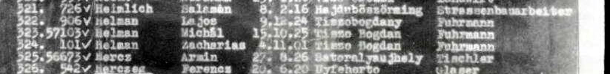
Following them forward, and finding they lived
The two nephews were sent to the synthetic-fuel plant at Rehmsdorf, the Kommando code-named Wille. When it was evacuated in April 1945 the train was strafed from the air and the survivors were marched the rest of the way. Both reached Terezín. Both were liberated there.
Zacharias went the other way. Transferred to Magdeburg-Rothensee on 23 July 1944, worked past use, ordered back to Auschwitz that October, and killed there about the 10th.
Terezín Memorial prisoner cards · Rehmsdorf personnel cards · prisoner card 57101, Magdeburg transfer and October return
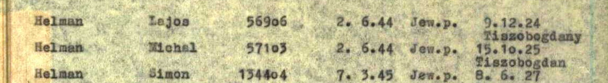
They were the boys from Helen’s story
Liberation came in pockets, and Helen was freed before the men were. Afterwards, in Budapest, she ran into landsmen from her own village. Two were her cousins, and one of them told her what had happened to her family.
Everyone had been sent to the side that was not selected for work, he said, except her sister Hinda and the fathers. Hinda was put with the labour column and crossed back to stay with her mother and the younger children. Her father lived about four months longer than the rest of them.
She never gave their names. Their own registration forms place them in Budapest in June 1945, in their own handwriting.
Every part of what the cousin told her holds up against the records. Roza and the five children arrived on 26 May 1944 and were never registered. Hinda was seventeen, old enough to be selected for labour, and no registration exists for her either. Zacharias was registered, transferred to the Magdeburg subcamp on 23 July, returned to Auschwitz on 8 October and died within days, a little over four months after them.
Helen Landó Helman, recorded testimony · Budapest survivor registration forms (Törzslap), 1945 · Arolsen Archives
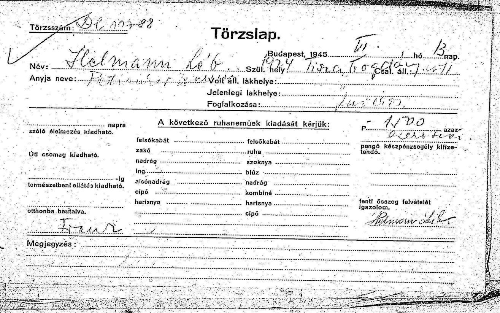
Four documents, one journey
Once you have a man’s prisoner number, the rest of his war can be assembled from the paperwork the system generated about him. This is Michal, 57103, traced from intake to home. Lajos’s file runs in parallel, the same four record types, a fortnight apart at the start.
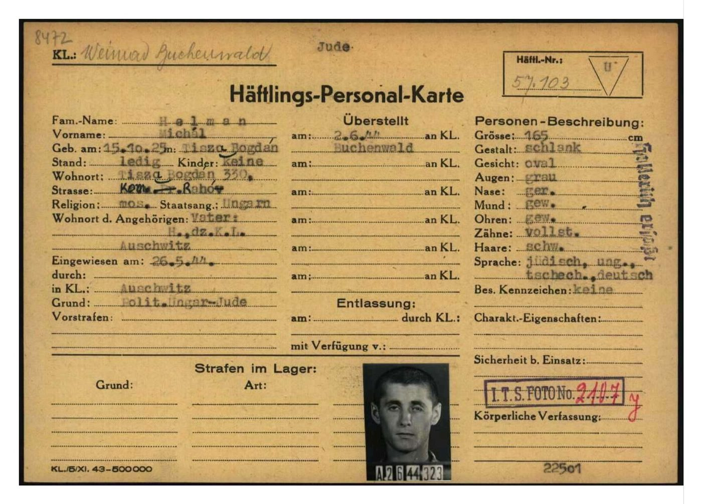
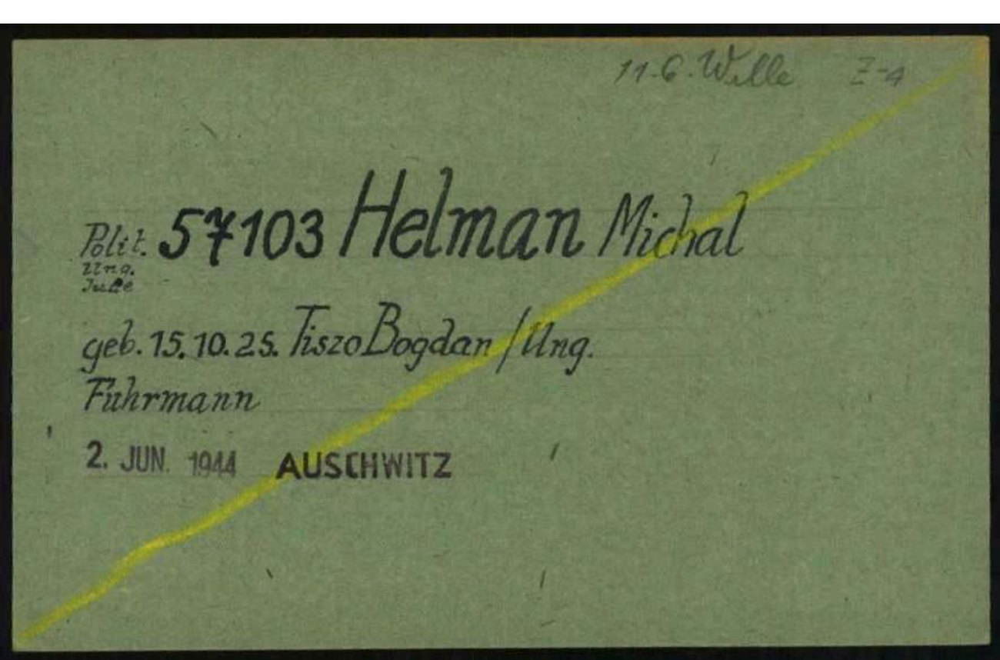
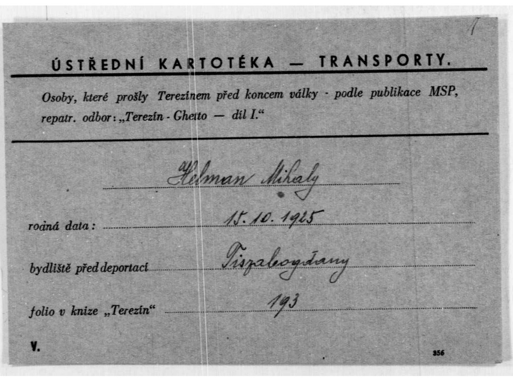
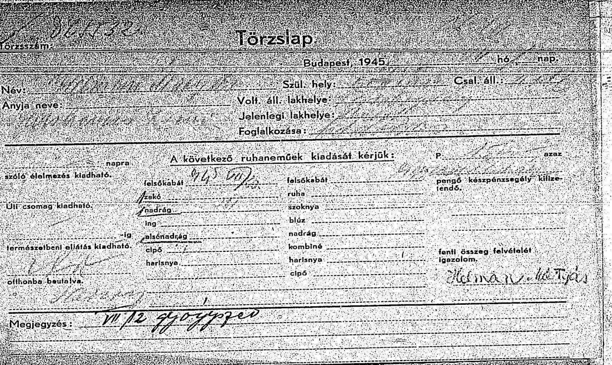
Not one of these four documents was created to record a life. They were made to register a body, assign it to a work detail, count it after liberation and issue it a coat. Read in sequence they give a nineteen-year-old’s war, in his own handwriting at each end.
Pages of Testimony, and a family that had been filing them
Searching the nephews’ parents at Yad Vashem returned Pages of Testimony for Miksa Helman and his wife Adél née Petranker, and for two of their sons. A Page of Testimony is not an official record. It is a form filled in by someone who knew the person, which is why it carries what no camp document does: a trade, a wife’s maiden name, a home town.
The submitters were their own surviving children, filing from Israel in the 1990s. Which meant the family had not only survived. Some of them had been alive, and documenting their dead, for fifty years.
Yad Vashem Central Database of Shoah Victims’ Names · items 225463, 225464, 225466, 1191850, 1191854
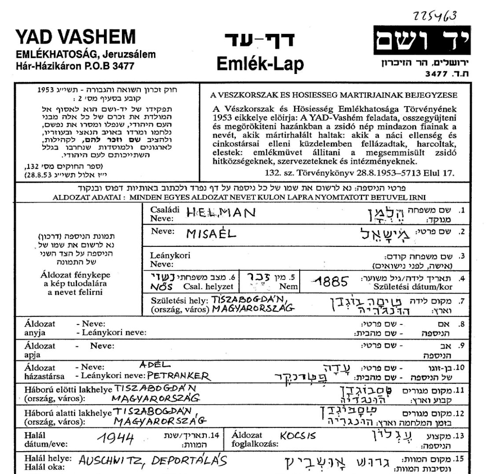
The family who did not know she had survived
Following the submitters forward reached living descendants in Israel and the United States, from a branch that had settled on a kibbutz before the war. They had built a family tree of their own and they knew their line perfectly well.
What was missing from it were Zacharias and David, two of Iczik’s sons, and everyone who came after them. On that tree those branches simply stopped.
So the reconnection ran in the other direction from the one you would expect. The research did not hand her a lost family. It handed a family back two brothers, and told them that one of those brothers had a granddaughter who lived.
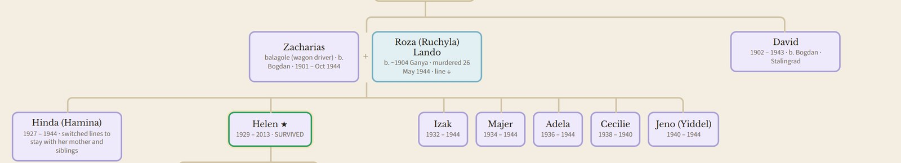
The list that hides them under another letter
Yad Vashem holds a Soviet-compiled list of Jews from the Rakhiv district who perished. The whole household is on one page of it, and not one of them is filed under Helman. Cyrillic has no letter H, so the clerk wrote the sound as G, and the family enters the record as Gelman.
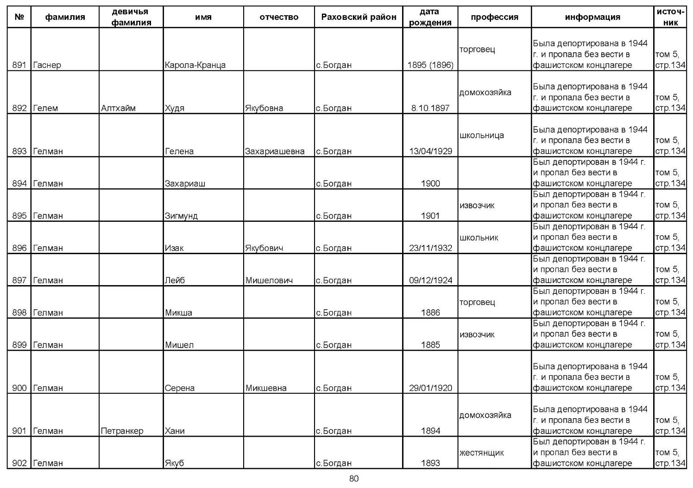
The first is step one. A search for Helman returns nothing here. A search for Gelman returns eleven people in one household, with patronymics that give you the fathers: Zachariashevna, Mishelovich, Mikshevna.
The second is a warning. This is a deportation roster, and it marks everyone on it as deported and missing in a Nazi camp. Helen is on it. So are Lajos and Sara. All three of them lived. It records who was taken, not who died, and a researcher who reads it as a death list will bury three survivors.
The brother who went the other way
Zacharias had a younger brother, David, born in Bogdan in April 1902. He does not appear on any transport list, because he was not there. In 1939 he crossed east into the Soviet Union. Two records, in two languages, account for the rest of it.
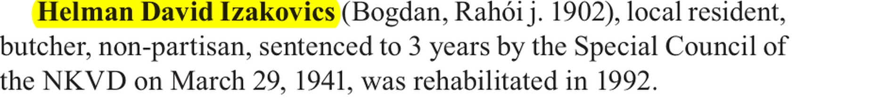
He fled east, was swept up in the Soviet security sweep of refugees and sentenced to three years in March 1941, and was released after the German invasion that June. He joined the Red Army and was killed at Stalingrad. In 1992 the Soviet state formally rehabilitated him, which is how his name survives in the repression register at all.
Helen remembered an uncle who left with two friends and was never heard from again. The memorial book names all three of them.
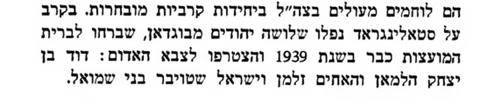
A camp record can only tell you about someone the camp system touched. David was never in it. He is recoverable only because two entirely separate archives, a Soviet repression register and a memorial book written in Hebrew by his neighbours, each kept one half of the same man.
This is step seven in practice. When a person leaves no record in the place you are looking, the people around them still do.
Conflicting evidence
Five conflicts sit inside this case. They are recorded here rather than resolved silently.
What was searched and not found
Negative results are part of the case. The Helman name does not appear in the Bohdan entry of the Czechoslovak business directory in any of its 1925, 1937 or 1938 editions, which is consistent with a poor carter’s family never being registered as a firm. Miksa Helman appears nowhere in the 1,000-name roll under any surname, birthplace or occupation, which is what establishes that he never reached Buchenwald and stayed at Auschwitz. No family passport photograph exists anywhere in the digitised DAZO collection, because the family never emigrated west in the 1920s and so never applied for one.
An identification is admitted only where independent record types corroborate one another without contradiction, and every linkage is verified against the primary document rather than an index entry. Where the evidence supports a probable conclusion rather than a proven one, it is stated as probable. Conflicts are disclosed, not reconciled by preference.
Repositories
Arolsen Archives · Yad Vashem Central Database of Shoah Victims’ Names · Terezín Memorial · USHMM · JewishGen Subcarpathia and Máramaros vital records · Sub-Carpathia Genealogy · the 1921 Czechoslovak census · Budapest survivor registration forms · Sefer Marmaros, Rakhiv and Bogdan chapters · the Kassa deportation log as published in Braham.